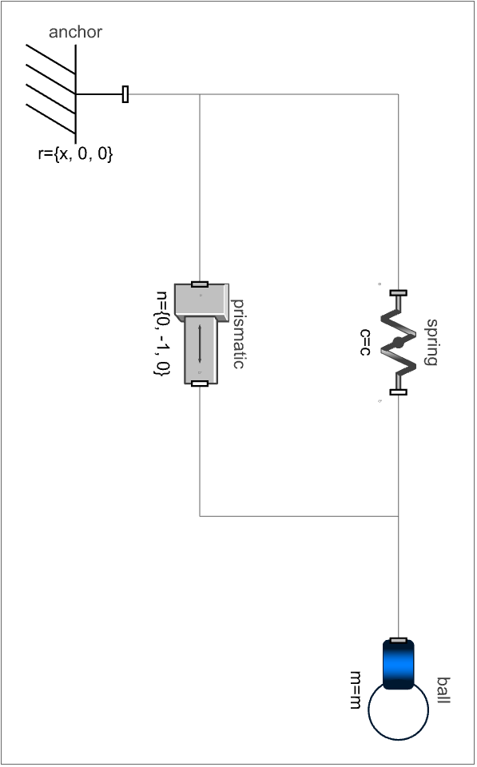
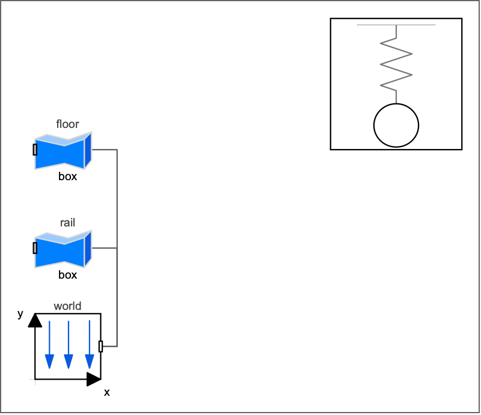
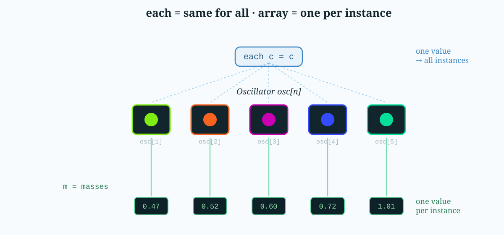
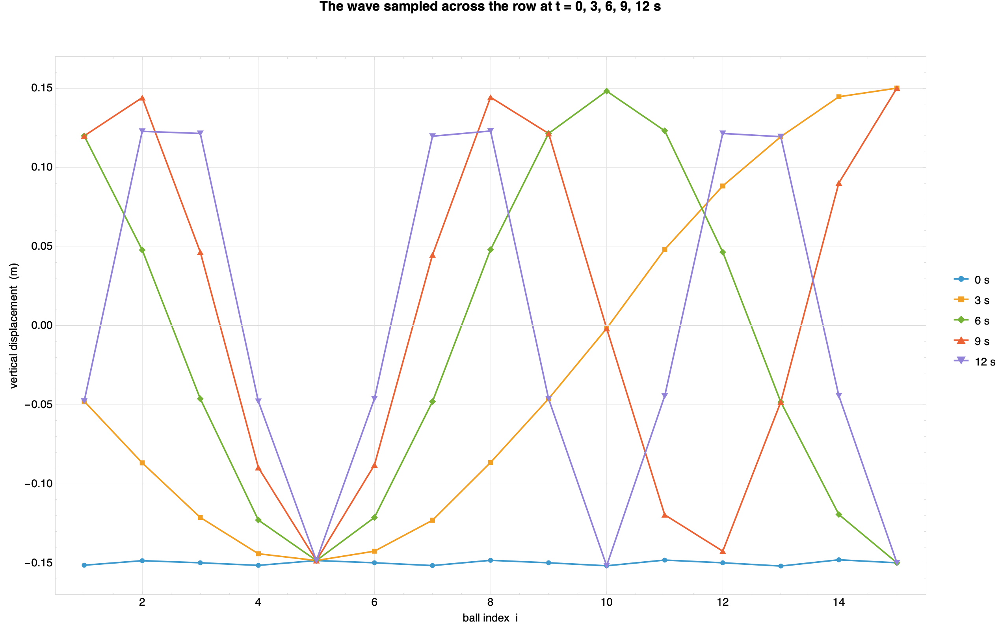

One model, fifteen dancers: vectorizing components

I hope you’ve got your preferred drink in hand ☕️🫖💧
You’ve seen the video. A row of pendulums — or in our case, springs and balls — released together. For a moment they move as one, then they drift apart into a travelling wave, split into little counter-marching packs, tie themselves in a knot, form (the illusion of) a double-helix… and then, as if nothing happened, snap back into a single line. 🌊
I wanted that in Modelica. Fifteen little spring-mass channels, each tuned to a slightly different frequency, dancing together. And here’s the question that decides whether your afternoon is pleasant or miserable:
are you going to build that model fifteen times?
Please say no. Today we build it once, then let Modelica make fifteen copies for us — with fifteen different masses — in a single declaration. That trick is called vectorizing components, and once you have it, you’ll reach for it constantly.
Let’s dig in.
Step 1 — build one thing, and build it well
Before you can have many, you need one. So we build a single channel: a spring, a mass, a guide rail to keep it moving vertically. Nothing fancy. Here’s the skeleton of our Oscillator (I’ve trimmed the animation cosmetics):
model Oscillator "A single vertical spring-mass channel"
import Modelica.Mechanics.MultiBody;
import Modelica.Constants.pi;
parameter Modelica.Units.SI.Mass m = 0.5 "Oscillating mass";
parameter Modelica.Units.SI.TranslationalSpringConstant c = 10 "Spring stiffness";
parameter Modelica.Units.SI.Length springLength = 0.5 "Rest height";
parameter Modelica.Units.SI.Length amplitude = 0.15 "Initial lift";
parameter Modelica.Units.SI.Position x = 0 "Lateral position";
final parameter Modelica.Units.SI.Time T_period = 2*pi*sqrt(m/c)
"Natural period — 2π√(m/c)";
MultiBody.Parts.Fixed anchor(r = {x, 0, 0});
MultiBody.Joints.Prismatic prismatic(n = {0, -1, 0}, ...);
MultiBody.Forces.Spring spring(c = c, s_unstretched = springLength, ...);
MultiBody.Parts.Body ball(m = m, ...);
equation
connect(anchor.frame_b, prismatic.frame_a);
connect(prismatic.frame_b, ball.frame_a);
connect(anchor.frame_b, spring.frame_a);
connect(spring.frame_b, ball.frame_a);
end Oscillator;Opened in System Modeler’s diagram view, those four parts and their connections lay themselves out as one tidy channel — a fixed anchor up top, the prismatic guide, the coil spring, and the ball hanging at the bottom:

Oscillator component in System Modeler’s diagram view — anchor, prismatic guide, spring and ballTwo things I want you to notice, because they’re what make the vectorization work later:
- Everything that could differ from each variant is a
parameter. The massm, the stiffnessc, the lateral positionx, the colours… all knobs on the outside. No magic numbers hiding in the equations. - There is no
inner Worldinside.Oscillatoris a component, not a top-level experiment. It doesn’t set up gravity or a coordinate origin — it just describes one channel and waits to be dropped into something bigger. (That’s the same “component vs. system” distinction we drew back in model refactoring. 😉)
Design your one thing so that every difference is a parameter, and future-you gets to be lazy. Which is the whole point.
Hey, we never talked about what “inner” means! Well, we won’t discuss it here — it’s a topic for another day. For now, just know that
inner/outeris how you share one object with many components.
Step 2 — the copy-paste trap
Now the naïve instinct. You need fifteen of them, so… you type fifteen of them:
Oscillator oscillator1(m = 0.47, x = 0.00, ballColor = {...});
Oscillator oscillator2(m = 0.49, x = 0.18, ballColor = {...});
Oscillator oscillator3(m = 0.51, x = 0.36, ballColor = {...});
// ... and so on, until your will to live runs out ...
Oscillator oscillator15(m = 1.01, x = 2.52, ballColor = {...});It works. It’s also fifteen places to make a typo, fifteen lines to touch when you want sixteen channels, and a connect statement graveyard to match. Want to change the stiffness for each spring? Fifteen edits. Want n = 50 for a fancier wave? Enjoy. 🙃
When you find yourself numbering variables foo1, foo2, foo3…, something is wrong… and Modelica is quietly waving at you: there’s an array for that.
Step 3 — vectorize it
Here’s the entire graveyard, replaced by one line:
parameter Integer n = 15 "Number of oscillators";
Oscillator oscillator[n];That [n] is the whole idea. oscillator is now an array of components — fifteen full Oscillator instances, each with its own spring, ball, joint and equations, all created from one declaration. Change n, and the count changes with it. One number. 🎉
And here’s the lovely part — open the model’s diagram in System Modeler and the whole array is a single icon. That one boxed component (top-right - yes I could have build a better icon… 😅) is all fifteen oscillators. It floats there unconnected because each channel is self-contained; the world, rail and floor on the left are the only shared scenery.

MercuryWave diagram in System Modeler — the single boxed component (top-right) is the array of fifteen oscillatorsYou reach into the array exactly like you’d expect, with a one-based index:
oscillator[1].prismatic.s // position of the first channel
oscillator[15].ball.frame_a // the connector of the last oneBut an array of identical oscillators just gives you fifteen balls doing the exact same thing — a boring, synchronized bounce. The magic of the mercury wave is that each channel is tuned differently. So how do we hand fifteen different masses to fifteen instances in one go?
Step 4 — each: the one keyword that makes it click
When you modify an array of components, every parameter you set has to answer one question: “same for everyone, or one value per instance?”
Modelica makes you say which, and the magic word is each:
Oscillator oscillator[n](
m = masses, // ARRAY of n → one mass per channel
springLength = springLengths, // ARRAY of n → one length per channel
x = x, // ARRAY of n → one position per channel
ballColor = ballColors, // ARRAY of n colours → one per channel
each c = c, // SCALAR → broadcast: same stiffness for all
each amplitude = amplitude, // SCALAR → same initial lift for all
each ballDiameter = ballDiameter); // SCALAR → same size for allRead that block slowly, because it’s the heart of the whole technique:
each c = csays “give this one scalar value to every element.” The stiffness is shared, so we broadcast it. Withouteach, Modelica would expectcto be an array ofnvalues and complain that a scalar doesn’t fit.m = masses(noeach) says “here’s an array ofnvalues — hand elementito instancei.” Channel 1 getsmasses[1], channel 2 getsmasses[2], and so on.
So each = “same for all”, and a plain array = “one apiece”. 💡 That single distinction is what turns a boring row of clones into a tuned instrument. Get it wrong and the compiler tells you immediately — a scalar where it wanted an array, or vice versa — so it’s a friendly mistake to make.

each broadcasts one scalar to every instance; a plain array feeds one value per instanceStep 5 — where do the arrays come from?
As we mentioned before, masses, x, springLengths… these are arrays of n values, and you can either type them out by hand — it can be needed if the values are not following a pattern… - or instead we compute them, with an array constructor (a little for living inside braces):
final parameter Real cycles[n] = {X + (n - i) for i in 1:n}
"How many oscillations channel i does in the cycle time T";
final parameter Modelica.Units.SI.Mass masses[n] =
{c*(T/(2*pi*cycles[i]))^2 for i in 1:n}
"Mass of channel i, inverted from T_i = 2π√(mᵢ/c)";
final parameter Modelica.Units.SI.Position x[n] =
{(i - 1)*dx for i in 1:n}
"Lateral position: line them up dx apart";Read {expr for i in 1:n} as “build a list, letting i run from 1 to n.” It’s the same comprehension idea you might know from Python. The physics — heavier balls swing slower, T = 2π√(m/c) — lives in one expression, evaluated n times. Change the tuning law in one place and all fifteen channels follow.
Even the colours come from a function that returns an n × 3 matrix, so channel i gets its own hue:
final parameter MultiBody.Types.Color ballColors[n] =
HarmonicMotion.Utilities.rainbowColors(n);And why do we see the wave. Here’s an interesting 2D view, the eight of each fifteen balls at a few instants: at t = 0 every ball is released together (flat blue line), and as the tuned frequencies drift apart the row folds into travelling-wave shapes. 🌊

MercuryWaveSo each ball position over time is on a vertical line, and the same colour curves are the different balls at the same time.
Step 6 — the tiny bit of plumbing
The last worry people have about vectorized components is connections. If you had to wire an array by hand you’d be back to fifteen connect lines — so Modelica lets you loop over them:
equation
for i in 1:n loop
connect(something.port[i], oscillator[i].frame_a);
end for;In our mercury wave we actually didn’t use this: each Oscillator carries its own Fixed anchor, so a channel is fully self-contained and needs no external wiring at all. That’s not an accident — it’s a direct payoff of the “build one thing well” rule from Step 1. The cleaner your component, the less plumbing the array needs.
The END for today
Enough for today. We built one clean oscillator, stamped out fifteen of them with a single [n], and used each to say what’s shared and what’s unique — no copy-paste, no numbered variables, one knob to rule the count. 😊
Break is over, go back to what you were doing.
Clem
Next ->
© 2025-2026 Clément Coïc — Licensed under creative commons 4.0. Non-commercial use only.